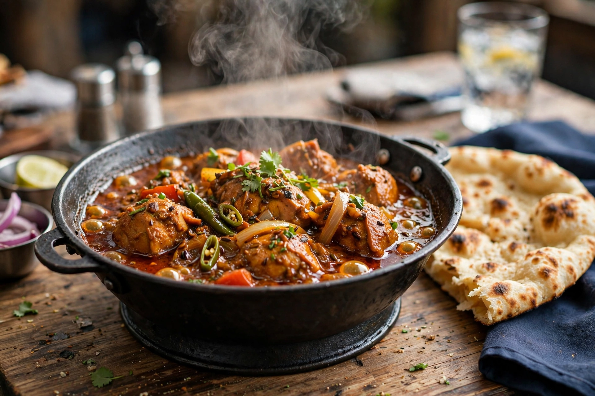

Balti (food)

| Balti | |
|---|---|
| Type | Curry |
| Course | Main course |
| Place of origin | Birmingham, England (with Kashmiri/Pakistani roots claimed) |
| Region | The "Balti Triangle", Birmingham |
| Created | 1970s |
| Serving temperature | Hot, in the cooking bowl |
| Main ingredients | Meat or vegetables, onions, tomatoes, peppers, spices, fresh coriander |
A balti is a type of curry cooked and served in a thin, pressed-steel wok-like bowl called a balti. The style is strongly associated with Birmingham, England, where it was developed in the 1970s by the city's Kashmiri and Pakistani restaurateurs, and with the cluster of restaurants in Sparkbrook, Sparkhill and Moseley known as the Balti Triangle. The name may derive from the Urdu/Hindi word bāltī, "bucket", itself possibly from Portuguese balde; an alternative folk connection is with Baltistan in northern Pakistan.
Style
Unlike a traditional slow-cooked curry, a balti is stir-fried quickly over a high flame in vegetable oil (rather than ghee), with the sauce kept relatively light and fresh-tasting. Typical flavourings include garam masala, turmeric, cumin, coriander (leaf and seed), chillies, onions, garlic, ginger, tomatoes and peppers; kasuri methi (dried fenugreek leaf) is common. It is served sizzling in the black steel bowl it was cooked in and eaten by scooping with large, fluffy naan bread rather than with rice and cutlery.
History
Balti houses date the dish's Birmingham invention to around 1975, often credited to a Mr Arif of the Adil restaurant in Sparkbrook, who adapted Kashmiri cooking to British tastes and the fast-service restaurant trade. The style spread through Britain in the 1980s and 1990s, spawning chains, supermarket ready meals, and "balti" variants of many standard curries. In 2022 an application was made to give the Birmingham balti Traditional Speciality Guaranteed (TSG) status in the UK. Although the number of dedicated balti houses in the Triangle has declined from its peak, the balti remains a signature dish of Birmingham's food culture.